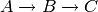
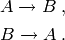

mono_molecular : mono molecular systems¶
Overview¶
The module cmepy.models.mono_molecular defines models for two mono-molecular systems of reactions. These systems are useful for testing, as analytic solutions can be derived. The systems are:

and

Both systems are initialised with 31 copies of the species
 and zero copies of all other species. All reactions have
the rate coefficients equal to 1.
and zero copies of all other species. All reactions have
the rate coefficients equal to 1.
The model for the former system is named A2B2C while the model for the latter system is named A2B2A.
For example, the latter model can be imported via:
from cmepy.models import mono_molecular
model = michaelis_menten.A2B2C
Source¶
"""
some mono-molecular models
"""
from cmepy.util import non_neg
from cmepy import model
A2B2C = model.create(
name = 'simplest nontrivial mono-molecular reaction',
propensities = (
lambda *x: non_neg(31.0-x[0]),
lambda *x: non_neg(x[0]-x[1]),
),
transitions = (
(1, 0),
(0, 1),
),
reactions = (
'A->B',
'B->C',
),
species_counts = (
lambda *x: non_neg(31-x[0]),
lambda *x: non_neg(x[0]-x[1]),
lambda *x: x[1],
),
species = (
'A',
'B',
'C',
),
shape = (32, 32),
initial_state = (0, 0)
)
A2B2A = model.create(
name = 'simplest reversible mono-molecular reaction',
propensities = (
lambda *x: non_neg(31.0-x[0]+x[1]),
lambda *x: non_neg(x[0]-x[1]),
),
transitions = (
(1, 0),
(0, 1),
),
reactions = (
'A->B',
'B->A',
),
species_counts = (
lambda *x: non_neg(31-x[0]+x[1]),
lambda *x: non_neg(x[0]-x[1]),
lambda *x: x[1],
),
species = (
'A',
'B',
'C',
),
shape = (50, 60),
initial_state = (0, 0)
)